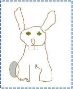

1. Have you ever noticed that some animals (rabbits for instance) hide as soon as they hear a loud sound? How do you explain that?
2. The success of human creations is often due to the fact that they simulate nature in a very persuasive way.
3. Can you create a rabbit made by paperboard and make it hide as soon as it hears a loud sound? What kind of material and devices will you need to do so?
4. Create the rabbit with the tools and material you will find in the lab. During the creation process, take photos of the rabbit and select and save some of them in the group’s folder.
5. Now, make the rabbit hide as soon as it hears a loud sound.
6. Prepare a presentation of the current state of your work to share with the other groups.


 eCraft2Learn H2020-731345 - EDUMOTIVA.
eCraft2Learn H2020-731345 - EDUMOTIVA.
This work is licensed under a License Creative Commons Atribution 4.0 International.
This project has received funding from the European Union's Horizon 2020 Coordination & Research and Innovation Action Under Grant Agreement No 731345.